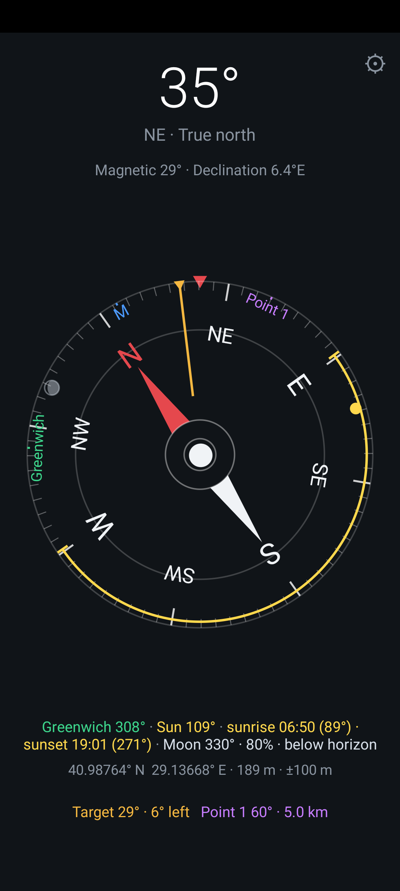
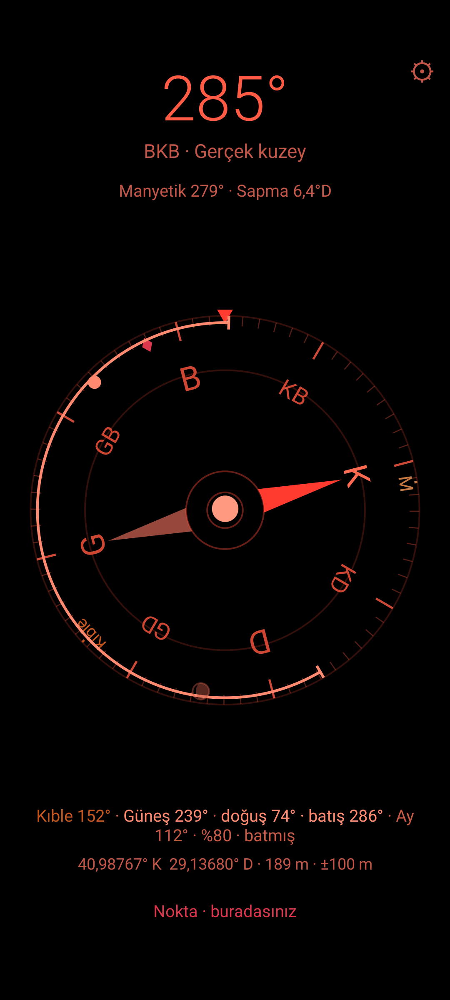
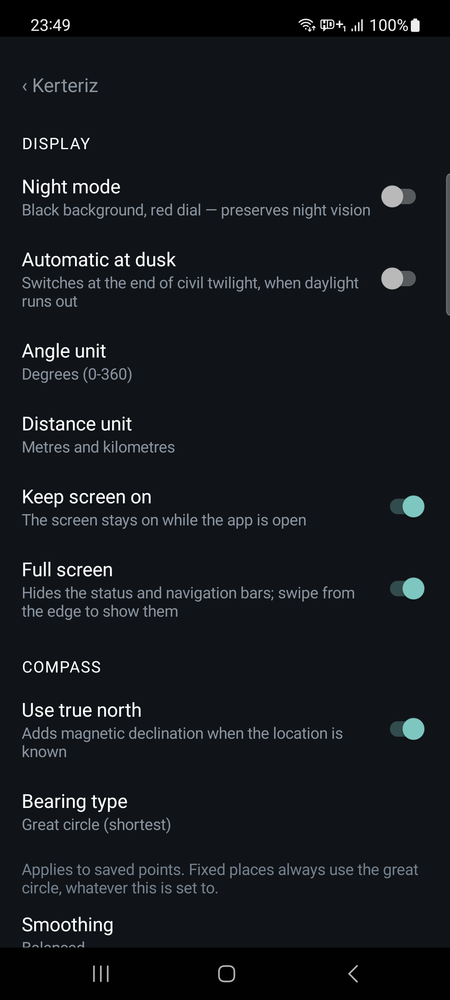

Kerteriz
An advanced compass for Android. True north, bearings to fixed places, the sun and the moon — drawn by hand on a dial, with nothing else in the way.
Download the APK Source on GitHub
MIT licensed · no ads · no tracking · no internet permission
What it does
-
True north
Once the location is known the magnetic declination is added, so north on the dial is the geographic pole and not the magnetic one. Magnetic north stays on the rim as a blue M.
-
Bearings to fixed places
Great-circle bearings to fixed places, marked on the rim with the distance. Worked out on the device: nothing is looked up, nothing is fetched.
-
Lock a bearing
Tap the dial to lock the direction you are facing. The bottom line then says how far you have drifted, left or right, and a double tick tells you when you are back on it.
-
Spirit level
A bubble in the middle of the dial. A tilted phone reads wrong — this is the thing that tells you it is tilted.
-
Sun and moon
Their bearings on the rim, the arc from sunrise to sunset, and the moon drawn with its phase — faint while it is below the horizon.
-
Saved points
Long-press the dial to save where you are, or paste coordinates or a shared map link. The rim then carries the bearing and the distance back.
-
Night mode
Black background, red dial. Marks are told apart by hue rather than brightness, so night vision survives a glance at the screen. It can switch by itself at the end of civil twilight.
-
Says it out loud
Every reading is announced to screen readers in the language of the phone, and a short tick passes north, east, south and west — so a bearing can be held without looking.
-
Small, and offline by design
About 110 KB installed from Google Play, which ships only your language; 300 KB as a single APK carrying all twenty-eight. No frameworks, no dependencies, no analytics. The app holds no internet permission at all, so it cannot send your location anywhere.
On the phone



Install it
- Download the APK from the releases page.
- Open the file on the phone and allow installing from this source when Android asks.
- That is all. There is no account, no sign-in and nothing to set up.
Would rather build it yourself? The README has the Gradle and adb steps, and every push produces a debug APK.
Privacy
The app declares no internet permission, so it cannot send anything anywhere — that is enforced by Android, not promised in a policy. Location is read on the device only, for the declination, the bearings to fixed places, the sun and the moon, and nothing is kept beyond the points you save yourself.
Twenty-eight languages
English is the default. Every official language of the European Union is there, together with Icelandic and both written standards of Norwegian, and Turkish. The app opens in whatever language the phone is set to and falls back to English for anything else; from Android 13 on, the system settings can also give the app a language of its own.
The translation covers the directions themselves, not only the sentences: the letters on the dial, the sixteen abbreviations, the hemisphere letters in the coordinates. East is O in German and O is west in French — which is why not one of those letters is hard-coded.